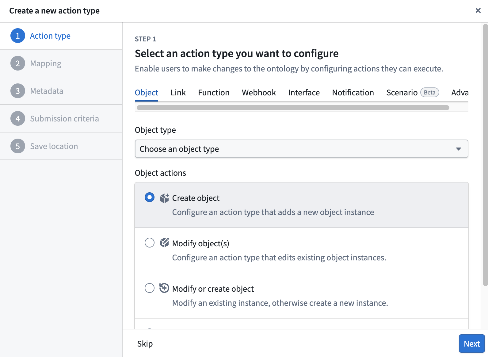
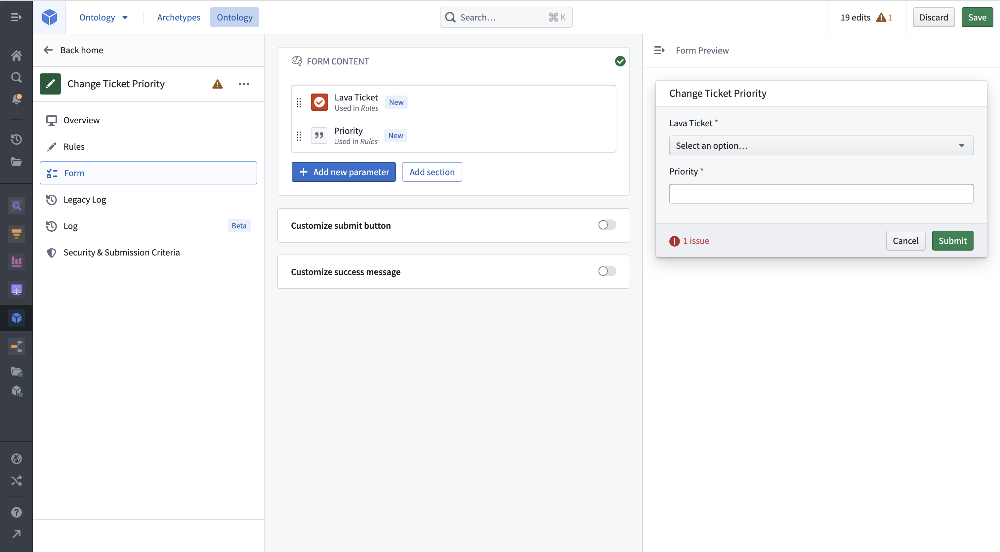
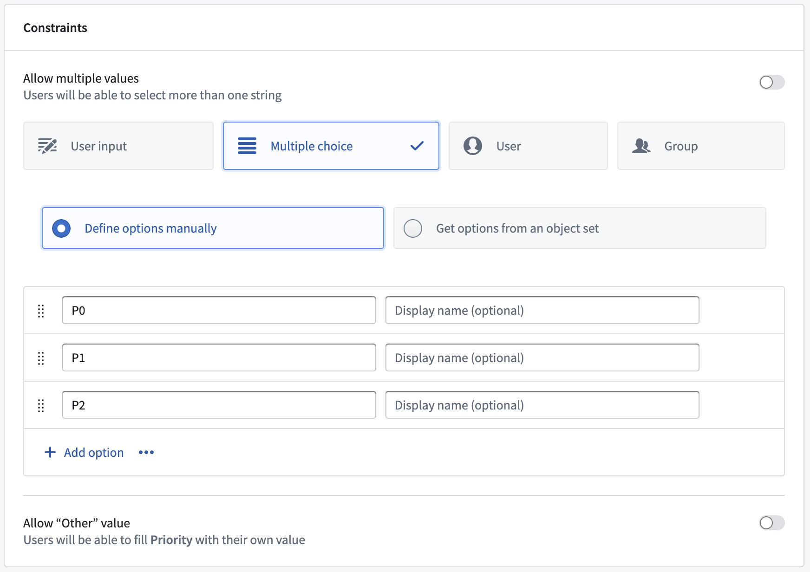
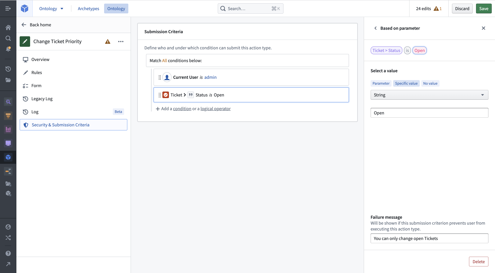
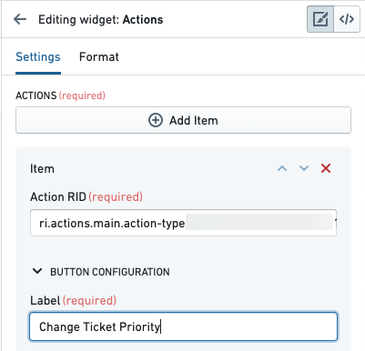
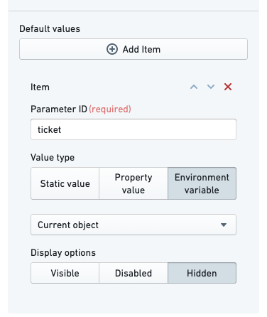
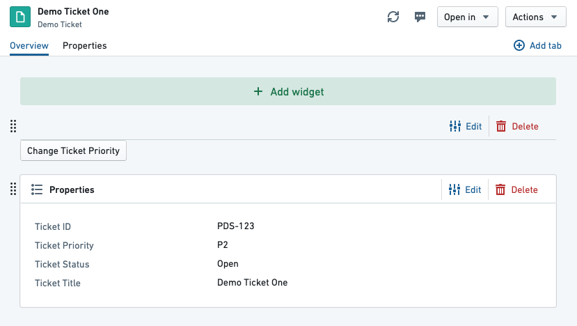
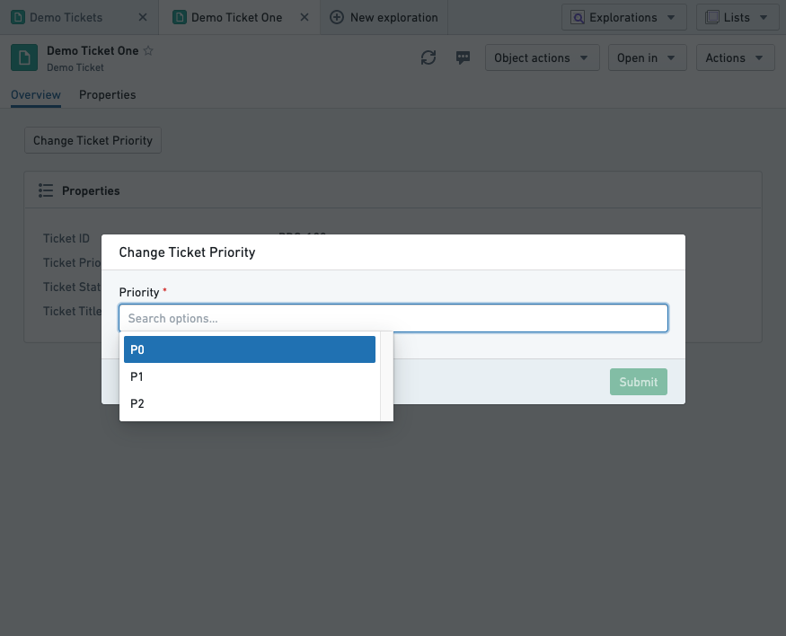
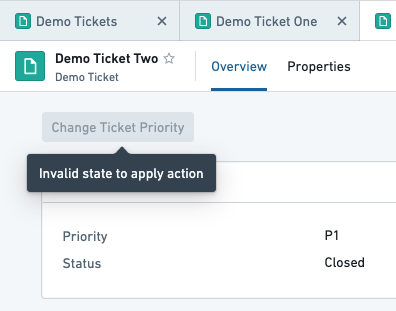

In this guide, we will create a simple action type for changing the priority on a ticket.
We will configure submission criteria to make sure that the priority is P0, P1, or P2, and that the ticket status is Open.
For this guide, we will use a Demo Ticket object type, which has four properties:
Ticket IDTitlePriorityStatusWe also have two demo objects available:
| Ticket ID | Title | Status | Priority |
|---|---|---|---|
| PDS-123 | Demo Ticket One | Open | P2 |
| PDS-124 | Demo Ticket Two | Closed | P1 |
You can recreate these in your Ontology if desired, but it is not essential.
Note that for a user to be able to take an action defined in an action type configuration, additional configuration is required. If running Object Storage v2, the user must enable edits with a toggle. If running Object Storage v1 (Phonograph), a writeback dataset must be created. Note that Object Storage v1 is in a planned deprecation phase of development; migrate to Object Storage v2.
We start by creating a new action type for changing the ticket's priority. In the Ontology Manager, select Action types on the left sidebar, then choose New action type at the top right of the view.

The creation wizard allows you to configure the most important features of an action type. On the Action type step, open the Object tab, select the Demo Ticket object type, then choose Modify object(s) under Object actions. On the Mapping step, add the Priority property by selecting Add property. On the Metadata step, enter an Action type name for your action type. Continue to the final step and select Create.
You can now see the full detailed view of your action type. You can make additional adjustments, like adding a Description in the Overview tab or adding additional properties to modify in the Rules tab.
Select the Parameters tab to get an overview of the parameters. The Ticket and Priority parameters have already been created based on the Rule.

Select the Priority parameter to limit the values it can take on. Change the constraints from User input to Multiple choice. This will allow you to pick what values can be chosen for this parameter. Add P0, P1, and P2 as options. If you applied your action to an object now, you could change the priority of a ticket to P0, P1, or P2. You will now add submission criteria that will restrict you to only changing the priority for open tickets.

Open the submission criteria section in the Security & Submission Criteria tab from the sidebar. Create a new condition by selecting Condition in the Execution section. Using the Parameter condition template, set a condition on the Ticket object parameter's Status property. Using the is operator, you can then do an exact string comparison between the ticket status and the specific value Open.

Add a failure message so users can see why an action has failed. Your action definition is now complete, and you can configure it to show up next to the Object View in Object Explorer.
Go to Demo Ticket One and edit its Object View. Add a new widget to the top, and choose the Actions widget. In the sidebar, select Add Item. Copy the action RID from the Ontology Manager and paste it into the Action RID field. Name the label "Change Ticket Priority".

By default, the action form will show every parameter as a field in the action form, including the Ticket parameter. Additionally, an action does not know that it should fill the current object in for the Ticket parameter. We will configure the action form to hide the ticket field (so the user cannot change the status of a different ticket), and set its value to the current object.
Under Default value, select Add Item. Type the parameter ID for the Ticket parameterâin this tutorial, we set it to ticket. Change the value type to Environment variable and select Current object. Finally, change the display option to Hidden.

You will now see the action button on the preview page:

You can now save and publish the Object View.
:::callout{theme="neutral"} Before you apply an action, you can validate its submission criteria, rules, and resulting edits with a test run in Ontology Manager. :::
Visit an open ticket and select the Change Ticket Priority button we configured. You should see the action form appear over the view. Clicking into the Priority field will show the single selected submission criterion we configured on the parameter:

Pick a priority and select Submit. The form will disappear and the object view will update with the new priority. Our submission criteria said that it should not be possible to run this action on a closed ticket. If we open Demo Ticket Two, which is closed, we see the following:

Object instances in the Foundry Ontology can be created and modified by both input datasources and user edits/actions. When a single object instance (that is, a row or object with a specific primary key value) receives data from both the input datasource and user edits, these received values must be transparently resolved with a conflict resolution strategy.
There are two strategies for resolving conflicts:
Learn more about how to resolve conflicting user edits and datasource updates.